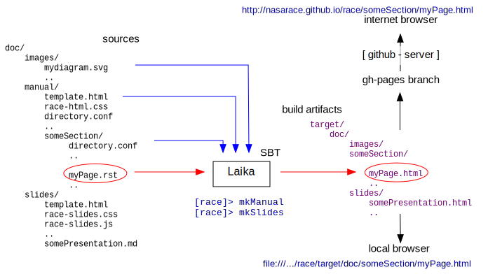

RACE Documentation Overview
Work- and Dataflow
RACE documentation is created from text files that are distributed with this repository, and translated into HTML and PDF by means of the Laika SBT plugin. Once translated, all content can be viewed locally in a web browser, or on the internet through http://nasarace.github.io/race.
This follows the RACE philosophy that all content should be kept under the same version control system in order to be consistent, and all tools should be integrated into the build system.

The currently supported source formats are Markdown and reStructuredText for textual content, and SVG for diagrams.
Sources are kept under the doc/ subdirectory, separated into:
doc/
images/ : (shared) images and diagrams (SVG files)
manual/ : user manual (web site)
slides/ : presentations (HTML based slide shows)To generate output, the RACE build system includes the following SBT commands
mkManual- translates the manual (web site) pagesmkSlides- translates the slidesmkDoc- translates both manual and slides
These commands can be executed either from within a interactive SBT command prompt or from a operating system shell
(e.g. > sbt mkManual).
Output is generated under the target/doc/ directory:
target/
doc/
images/
<manual-html-pages>..
slides/
<slide-html-pages>..Note that manual (site) sources are lifted up to target/doc, which mostly serves the purpose of being able to
link to slides, and slides being able to share the same images.
To view locally, use your favorite browsers "open file" command and point it to the respective *.html page, e.g.
race/target/doc/about.html for the start page of the online manual. Note there is no need to commit before
viewing translation results, editorial changes can be kept entirely out of the commit history.
As of this writing, Google Chrome works best to view RACE documentation, especially for printing slides.
The translated documentation is published through GitHub Pages, i.e. the target/doc/ content is copied into a
orphan gh-pages branch of the RACE repository that is automatically served by GitHub on
http://nasarace.github.io/race.
Translation Directives
The translation process is controlled by three special files that are looked up within the directory hierarchy of each page source
template.html- is a Laika specific HTML document with{{..}}delimited placeholders that are filled in by Laika. While templates can be directory- (i.e. section and document type) specific, those are usually just static files in the root directory of the respective document type (e.g. "manual")race-<type>.css- are CSS files that can be used to control presentation aspects. Again, those are usually just kept in root directoriesdirectory.conf- are meta-content files that define how Laika processes the contents of the directory that contains the respective file. Each documentation subdirectory should have such a directory.conf file
A typical directory.conf contains three elements
title- which defines how the directory is presented in the navigation barnavigationOrder- controls in which order files and subdirectories within this directory are processedrootPath- is a RACE specific setting which is used to resolve image (SVG) path names. This should point to the root directory of the respective documentation type (e.g.manual)
For instance, a doc/manual/installation/directory.conf file might look like this:
title = "Installing RACE"
navigationOrder = [
prerequisites.md
download.md
build.md
]
rootPath = ".."Please refer to the Laika documentation for details about the translation process, which supports extensions at various different levels.
Presentation Material
RACE also uses markup text files and Laika to generate slide presentations in HTML. Each presentation is kept in a single source file, the level 1 header is the presentation title, each level 2 header represents a single slide:
# My Sample Presentation
some sub-title
## First Slide
* talking point 1
* talking point 2
<img src="images/someDiagram.svg" class="center scale60">
## Second Slide
...Given that slide formatting should be kept simple, markdown (*.md) is usually a more readable and compact source format for slides than reStructuredText.
Slide shows are translated into single HTML pages that make use of a minimal race-slides.js javascript file
which implements slide navigation functions. Currently supported commands are
- <enter> - next slide
- <shift-enter> - previous slide
- 'f' - enter full screen (presentation) mode (exit is browser specific, usually <esc>)
- <digit> - go to page 0..9 ('0' being title page)
- <ctrl-digit><digit> - go to pages > 10
Images are best included by means of direct <img ..> HTML tags, which can make use of style classes such as
center and scale60 (defined in race-slides.css) to control scaling and horizontal alignment.
RACEs presentation support favors simplicity, compact representation (single text file) and availability (view in browser) over sophisticated layouts and slide transitions. Specialized themes can be implemented by providing custom template and CSS files.
Since slide layout is based on browser view height, and browsers vary in terms of including decorations such as menubars, slides are best viewed in fullscreen mode.